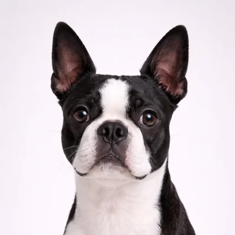

Buldogue Francês vs Boston Terrier
Duas raças charmosas e compactas com grandes personalidades. Ambas ótimas para vida em apartamento—mas qual se adapta ao seu estilo de vida?

Buldogue Francês
O Francês Charmoso
O Buldogue Francês é uma raça charmosa e adaptável com personalidade brincalhona, conhecido por suas orelhas de morcego e natureza afetuosa.
Ver perfil completo →
Boston Terrier
O Cavalheiro Americano
O Boston Terrier, conhecido como "O Cavalheiro Americano", é um cão pequeno e animado com temperamento amigável e alegre.
Ver perfil completo →Comparação Lado a Lado
| Atributo | Buldogue Francês | Boston Terrier |
|---|---|---|
| 📏 Tamanho | Grande | Grande |
| ⏳ Expectativa de Vida | 10-12 anos | 10-12 anos |
| ⚡ Nível de Energia | ●●●●● Muito Alto | ●●●●○ Alto |
| ✂️ Necessidades de Tosa | ●●○○○ Moderado | ●●●○○ Moderado |
| 🎓 Treinabilidade | ●●●●● Excelente | ●●●●● Excelente |
| 👶 Bom com Crianças | ●●●●● Excelente | ●●●●● Excelente |
| 🏠 Apto para Apartamento | ●●○○○ Não Ideal | ●●○○○ Não Ideal |
| 🐕 Queda de Pelo | Alto | Intensa |
🧠 Buldogue Francês Temperamento
Buldogues Franceses são tranquilos e adaptáveis, prosperando em apartamentos urbanos ou casas no campo. São brincalhões, mas não hiperativos, tornando-os excelentes companheiros para vários estilos de vida.
🧠 Boston Terrier Temperamento
Boston Terriers são animados, muito inteligentes e têm uma disposição gentil. São conhecidos por suas marcas tipo smoking e personalidade amigável e divertida.
🏃 Necessidades de Exercício
Necessidades moderadas de exercício—caminhadas curtas e sessões de brincadeira são suficientes. Evite esforço excessivo em clima quente devido ao focinho achatado.
Energia moderada, necessitando de caminhadas diárias e brincadeiras. Mais atlético que Frenchies, mas ainda propenso ao superaquecimento.
✂️ Requisitos de Tosa
Tosa mínima—escovação semanal. Limpe as rugas faciais regularmente para prevenir infecções.
Baixa manutenção—escovação ocasional. Sua pelagem curta é fácil de cuidar.
🎯 Qual é o Certo para Você?
Escolha um Buldogue Francês se...
- ✓Você quer um companheiro mais calmo e relaxado
- ✓Você prefere uma constituição mais robusta
- ✓Você mora em apartamento
- ✓Você quer requisitos mínimos de exercício
- ✓Você ama as adoráveis orelhas de morcego
Escolha um Boston Terrier se...
- ✓Você quer um cão um pouco mais ativo
- ✓Você prefere o visual de smoking
- ✓Você quer um cão mais fácil de treinar
- ✓Você gosta de uma constituição mais atlética
- ✓Você quer uma raça que vive mais
Conclusão
Ambos são excelentes cães de apartamento com grandes personalidades. Frenchies são mais calmos e relaxados, enquanto Bostons são um pouco mais energéticos e atléticos. Ambos vão roubar seu coração!